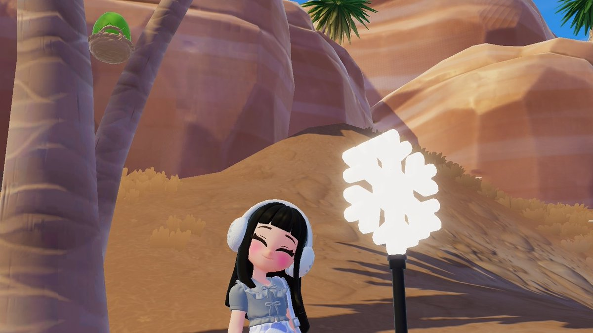
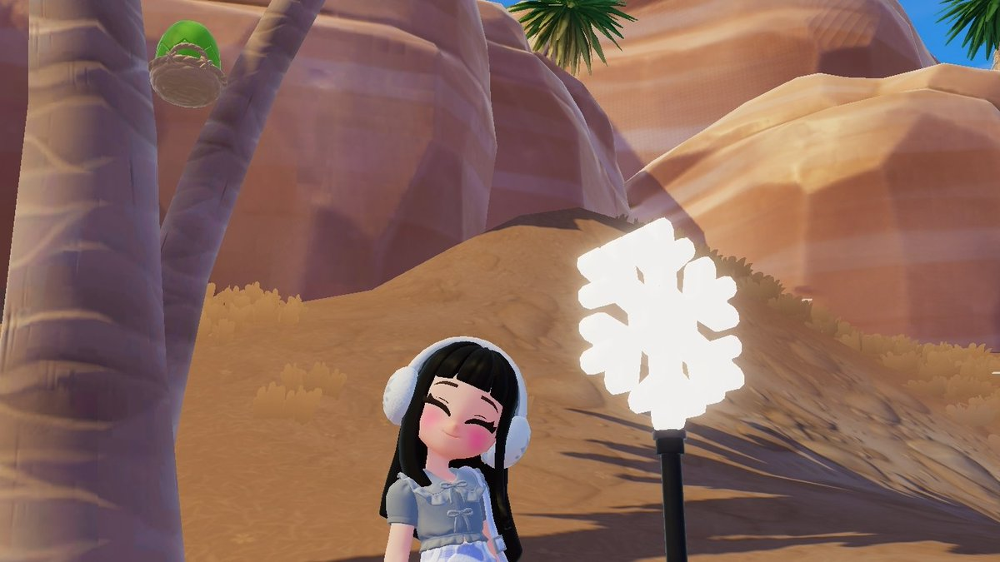
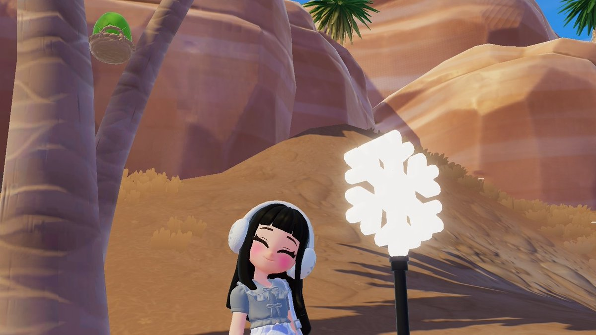

Fluorite Onsen Mountain Lake · Oak Timber 12 · Egg beside Annie’s palm branches · Bubble still being hunted.

 

10/02/2026 · All today’s drops, quests, bubble intel, and the freshest tweets (limited to Feb 10), plus the latest Day 11 Emerald Egg/Furniture details.
Fluorite Onsen Mountain Lake · Oak Timber 12 · Egg beside Annie’s palm branches · Bubble still being hunted.

Question to the community: once the daily quest is done, players are re-running Dream Bubble/piano interaction loops instead of grinding; that’s where the furniture bubble drops happen.
Roonby’s Day 11 Naughty Egg Hunt guide (10 Feb 2026) pinpoints the Emerald Egg above a tree inside the Onsen event zone—look up when you run the Winter Event loop. The same area is also where the Day 11 Egg Furniture Snowman bubble appears, so once you clear the egg, keep sweeping the Onsen trees and Snowman props until the furniture bubble spawns. Read the full guide for the annotated maps and photo tips.
Community builders are showcasing cozy lighting and floating structures today:
Focus on Piano/Art Street, the Snowman bridge, and the Bird Event area. Keep Glyph Hub’s Day 6+ list handy, rerun Dream Bubble/piano sequences, and check the Onsen tree tops for the Emerald Egg + furniture bubble once you’ve cleared the main loop.
Manual refresh 10/02/2026 12:45 JST — added Day 11 Emerald Egg & furniture details, kept the tweet capsule strict to Feb 10 posts, and expanded the community sections with today’s builder spotlight for cozy lighting and collaborative play.
Feeds: @rairairaa, @heartopia_fess, @Glyph_Hub, @Vilkychan, plus Roonby’s Day 11 guide for detailed location maps. Each tweet is linked and the guide is cited for the egg/furniture visuals.